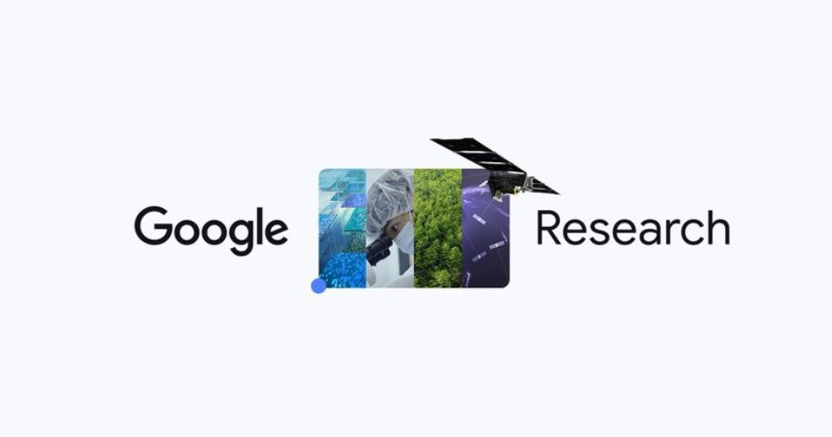
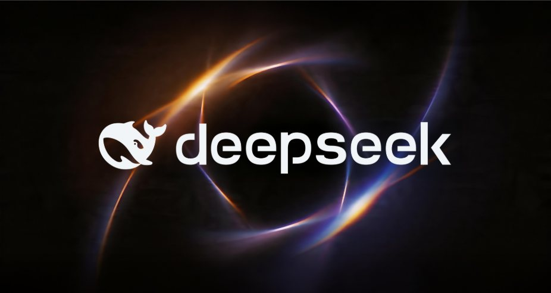

01Agent 与产品
Google · Antigravity /teamwork 多智能体协作
Google Research 展示团队与学术伙伴用 Antigravity 的 /teamwork 多智能体工作流，配合 Gemini 4 Argon、Carbon、Hydrogen 模型，在信息论、形式化验证、分子结构和内核优化等领域取得成果，并向研究者开放使用。

Google Research 展示团队与学术伙伴用 Antigravity 的 /teamwork 多智能体工作流，配合 Gemini 4 Argon、Carbon、Hydrogen 模型，在信息论、形式化验证、分子结构和内核优化等领域取得成果，并向研究者开放使用。

OpenAI 推出 ChatGPT Wallet，dot 可在用户批准下代用户完成购买，智能体支付不接触实际卡号且每笔需经安全检查。该功能即日起在美国向 Pro 订阅用户的 dot 推出。

Sierra 发布 Personal Agent Protocol（Poppy）v1.0，该协议定义个人智能体如何通过企业智能体、网站和 API 与公司交互，基于 MCP、OpenAPI、UCP 等现有标准构建，认证由 OAuth 控制权限。

DeepSeek 在 API 中开放此前 App 对话服务所用的能力，开发者开启对应参数即可用联网搜索、文件输入、阅读链接等功能，工具调用与上下文拼接由服务端完成。
Edge0 开源 Edge0-145B 与 Edge0-120B 模型及统一推理框架和部署工具，称 Edge0-145B 是首个可在个人电脑本地运行的 145B 参数开源模型。


Nvidia 宣布黄仁勋辞去 CEO、总裁和董事职务，CFO Colette Kress 出任临时 CEO。创投圈担忧其继任者更保守，短期难延续其每年数十亿美元、今年已参与 105 轮的投资节奏，AI 创业公司融资或出现资本缺口。
Dario Amodei 在纽约 JPMorgan 活动上与 Jamie Dimon 对谈，对 Anthropic IPO 路演期间的市场动荡不以为意，称对上市时机和市场状况不太在意。

Cursor 发布安全事件完整调查：攻击者利用 Fireworks 暴露的访问密钥读取用于模型训练的 coding agent trace，少于 0.01% 客户的 API 凭证暴露，恶意 Claude Code 扩展波及最多 5000 用户。